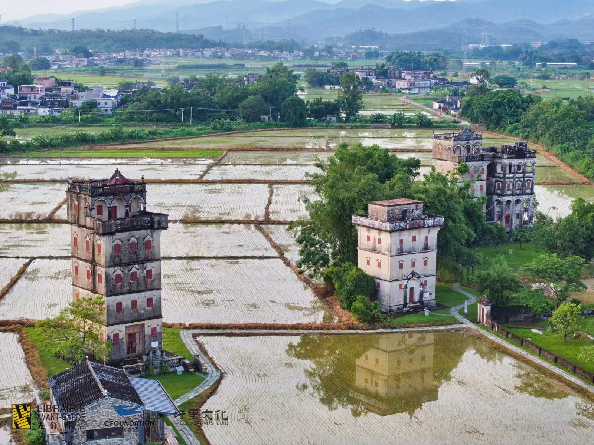
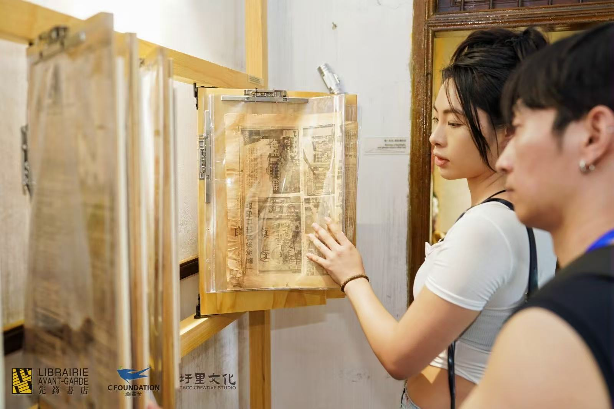
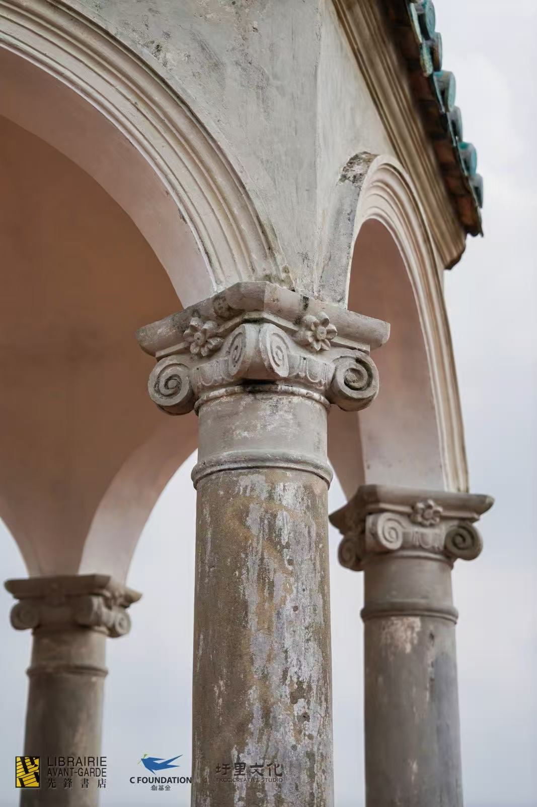
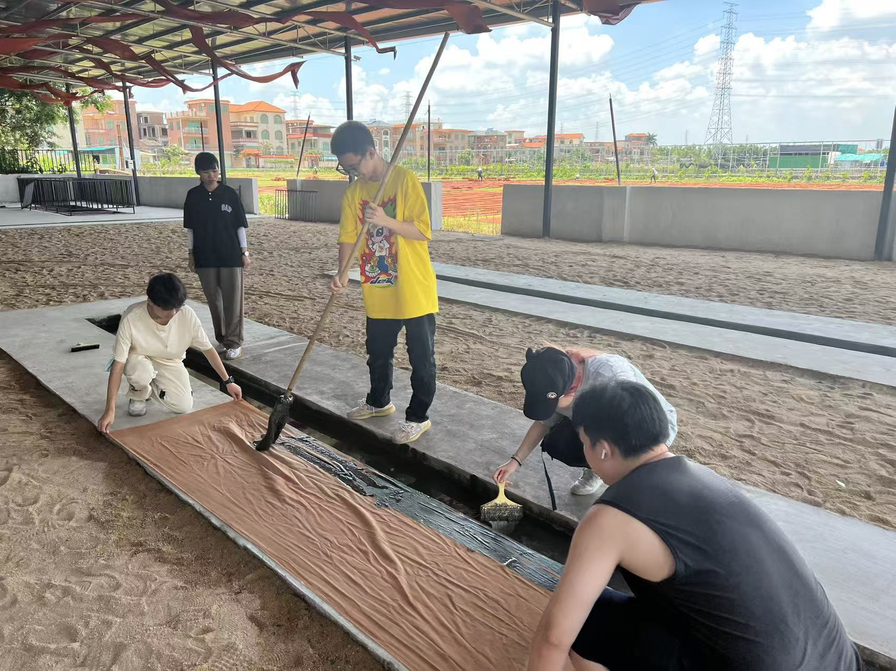
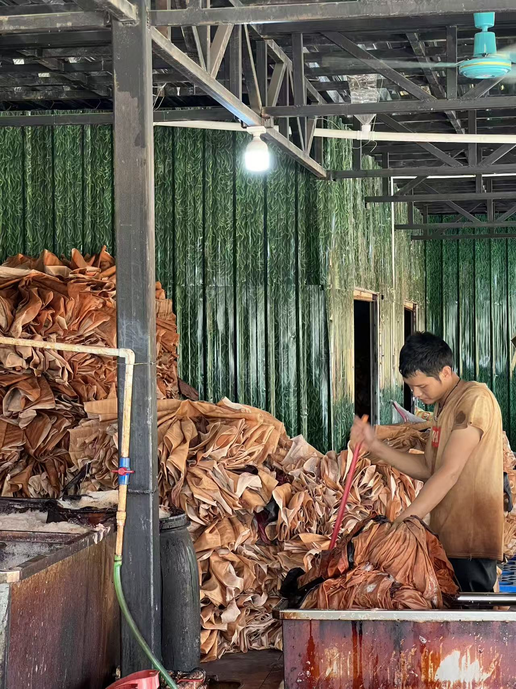
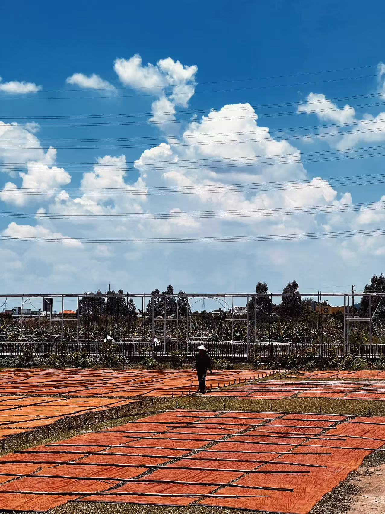
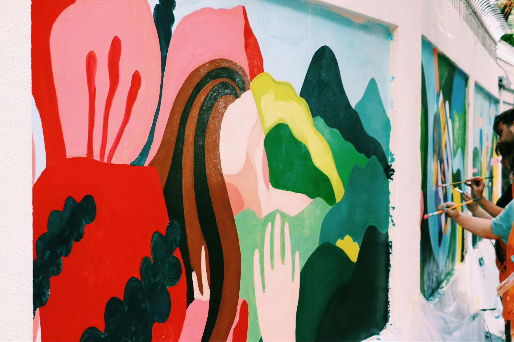
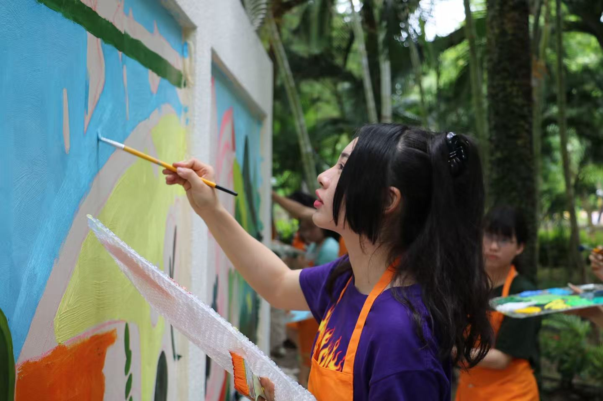
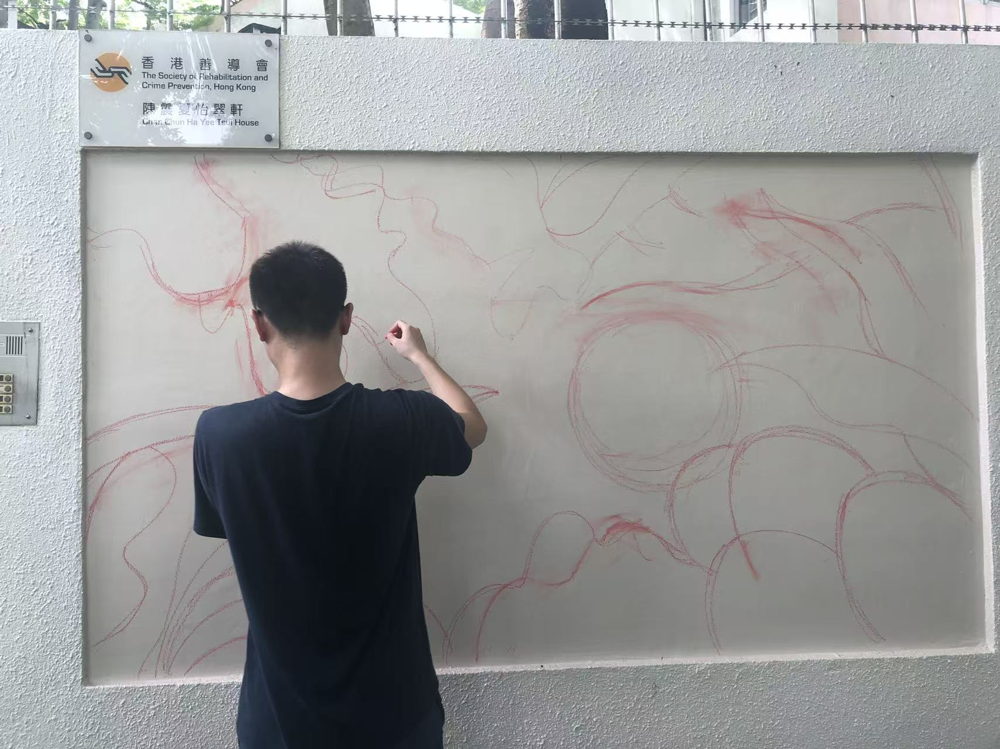

“创想·先锋”设计研学营 Design Field Study Programme
Field visits and discussions on local heritage and architecture, alongside a collaborative project on “Reconstruction” and an individual visual response.



Teaching · Field Study · Collaboration
Selected workshops, field studies and collaborative projects, documenting my roles in teaching, organising and learning.
Field visits and discussions on local heritage and architecture, alongside a collaborative project on “Reconstruction” and an individual visual response.



A field-based workshop focused on material qualities, observation of traditional textile processes and learning through making.



A community mural project with The Society of Rehabilitation and Crime Prevention, Hong Kong, at Chan Chun Ha Yee Tsui House, involving visual research, drawing development, on-site painting, a project booklet and a small installation.


